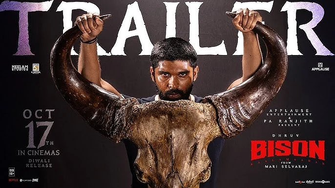

Diwali 2025 — Tamil Releases
Dude · Bison · Diesel — three flavours for the festival weekend (Release: 17 October 2025)

Dude
Director: Keerthiswaran · Stars: Pradeep Ranganathan, Mamitha Baiju
A youthful, feel‑good entertainer that blends romance and social commentary — Pradeep returns with a film made for young audiences, exploring friendship, self‑image and the chaotic fun of modern relationships.
Vibe:Fun, relatable, festival‑friendly.
Highlight:Strong word‑of‑mouth and a lead who resonates with Gen‑Z.
Why watch:Light, entertaining — perfect for family outings during Diwali.
Bison Kaalamaadan
Director: Mari Selvaraj · Star: Dhruv Vikram
A gritty sports drama set around kabaddi and the social struggles of its characters, Bison mixes physical grit with a director's signature focus on social themes and richly textured storytelling.
Vibe:Intense, thematic, crowd‑pulling.
Highlights:Strong lead performance and an emotional sports backbone.
Why Watch: For audiences who want substance with their festival cinema.

Diesel
Director: Shanmugam Muthusamy · Stars: Harish Kalyan, Athulya Ravi
An action‑heavy thriller rooted in North Chennai's underbelly — Diesel promises high‑octane set‑pieces, a diesel‑mafia plot and a raw performance from Harish Kalyan.
Vibe: Gritty action, edge‑of‑the‑seat sequences.
Highlights: Sea‑shoots and large‑scale action for festival spectacle.
Why Watch: If you want a hardcore action outing during Diwali.